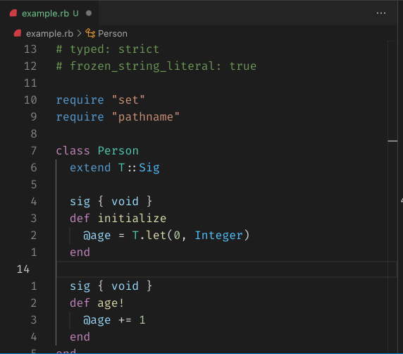

Class: RubyLsp::Requests::SemanticHighlighting
- Inherits:
-
BaseRequest
- Object
- SyntaxTree::Visitor
- BaseRequest
- RubyLsp::Requests::SemanticHighlighting
show all
- Extended by:
- T::Sig
- Defined in:
- lib/ruby_lsp/requests/semantic_highlighting.rb
Overview

The semantic highlighting request informs the editor of the correct token types to provide consistent and accurate highlighting for themes.
Example
def foo
var = 1 some_invocation var end
Defined Under Namespace
Classes: SemanticToken
Constant Summary
collapse
- TOKEN_TYPES =
T.let({
namespace: 0,
type: 1,
class: 2,
enum: 3,
interface: 4,
struct: 5,
typeParameter: 6,
parameter: 7,
variable: 8,
property: 9,
enumMember: 10,
event: 11,
function: 12,
method: 13,
macro: 14,
keyword: 15,
modifier: 16,
comment: 17,
string: 18,
number: 19,
regexp: 20,
operator: 21,
decorator: 22,
}.freeze, T::Hash[Symbol, Integer])- TOKEN_MODIFIERS =
T.let({
declaration: 0,
definition: 1,
readonly: 2,
static: 3,
deprecated: 4,
abstract: 5,
async: 6,
modification: 7,
documentation: 8,
default_library: 9,
}.freeze, T::Hash[Symbol, Integer])- SPECIAL_RUBY_METHODS =
T.let((Module.instance_methods(false) +
Kernel.methods(false) + Bundler::Dsl.instance_methods(false) +
Module.private_instance_methods(false))
.map(&:to_s), T::Array[String])
Instance Method Summary
collapse
Methods inherited from BaseRequest
#range_from_syntax_tree_node
Constructor Details
Returns a new instance of SemanticHighlighting.
76
77
78
79
80
81
82
83
|
# File 'lib/ruby_lsp/requests/semantic_highlighting.rb', line 76
def initialize(document, encoder: nil)
super(document)
@encoder = encoder
@tokens = T.let([], T::Array[SemanticToken])
@tree = T.let(document.tree, SyntaxTree::Node)
@special_methods = T.let(nil, T.nilable(T::Array[String]))
end
|
Instance Method Details
#add_token(location, type, modifiers = []) ⇒ Object
212
213
214
215
216
217
218
219
220
221
222
223
|
# File 'lib/ruby_lsp/requests/semantic_highlighting.rb', line 212
def add_token(location, type, modifiers = [])
length = location.end_char - location.start_char
modifiers_indices = modifiers.filter_map { |modifier| TOKEN_MODIFIERS[modifier] }
@tokens.push(
SemanticToken.new(
location: location,
length: length,
type: T.must(TOKEN_TYPES[type]),
modifier: modifiers_indices
)
)
end
|
#run ⇒ Object
93
94
95
96
97
98
|
# File 'lib/ruby_lsp/requests/semantic_highlighting.rb', line 93
def run
visit(@tree)
return @tokens unless @encoder
@encoder.encode(@tokens)
end
|
#visit_a_ref_field(node) ⇒ Object
101
102
103
|
# File 'lib/ruby_lsp/requests/semantic_highlighting.rb', line 101
def visit_a_ref_field(node)
add_token(node.collection.value.location, :variable)
end
|
#visit_call(node) ⇒ Object
106
107
108
109
110
|
# File 'lib/ruby_lsp/requests/semantic_highlighting.rb', line 106
def visit_call(node)
visit(node.receiver)
add_token(node.message.location, :method)
visit(node.arguments)
end
|
#visit_command(node) ⇒ Object
113
114
115
116
|
# File 'lib/ruby_lsp/requests/semantic_highlighting.rb', line 113
def visit_command(node)
add_token(node.message.location, :method) unless special_method?(node.message.value)
visit(node.arguments)
end
|
#visit_command_call(node) ⇒ Object
119
120
121
122
123
|
# File 'lib/ruby_lsp/requests/semantic_highlighting.rb', line 119
def visit_command_call(node)
visit(node.receiver)
add_token(node.message.location, :method)
visit(node.arguments)
end
|
#visit_const(node) ⇒ Object
126
127
128
|
# File 'lib/ruby_lsp/requests/semantic_highlighting.rb', line 126
def visit_const(node)
add_token(node.location, :namespace)
end
|
#visit_def(node) ⇒ Object
131
132
133
134
135
|
# File 'lib/ruby_lsp/requests/semantic_highlighting.rb', line 131
def visit_def(node)
add_token(node.name.location, :method, [:declaration])
visit(node.params)
visit(node.bodystmt)
end
|
#visit_def_endless(node) ⇒ Object
138
139
140
141
142
143
|
# File 'lib/ruby_lsp/requests/semantic_highlighting.rb', line 138
def visit_def_endless(node)
add_token(node.name.location, :method, [:declaration])
visit(node.paren)
visit(node.operator)
visit(node.statement)
end
|
#visit_defs(node) ⇒ Object
146
147
148
149
150
151
152
|
# File 'lib/ruby_lsp/requests/semantic_highlighting.rb', line 146
def visit_defs(node)
visit(node.target)
visit(node.operator)
add_token(node.name.location, :method, [:declaration])
visit(node.params)
visit(node.bodystmt)
end
|
#visit_fcall(node) ⇒ Object
155
156
157
158
|
# File 'lib/ruby_lsp/requests/semantic_highlighting.rb', line 155
def visit_fcall(node)
add_token(node.value.location, :method) unless special_method?(node.value.value)
visit(node.arguments)
end
|
#visit_kw(node) ⇒ Object
161
162
163
164
165
166
|
# File 'lib/ruby_lsp/requests/semantic_highlighting.rb', line 161
def visit_kw(node)
case node.value
when "self"
add_token(node.location, :variable, [:default_library])
end
end
|
#visit_m_assign(node) ⇒ Object
169
170
171
172
173
|
# File 'lib/ruby_lsp/requests/semantic_highlighting.rb', line 169
def visit_m_assign(node)
node.target.parts.each do |var_ref|
add_token(var_ref.value.location, :variable)
end
end
|
#visit_params(node) ⇒ Object
176
177
178
179
180
181
182
183
184
|
# File 'lib/ruby_lsp/requests/semantic_highlighting.rb', line 176
def visit_params(node)
node.keywords.each do |keyword,|
location = keyword.location
add_token(location_without_colon(location), :variable)
end
name = node.keyword_rest&.name
add_token(name.location, :variable) if name
end
|
#visit_var_field(node) ⇒ Object
187
188
189
190
191
192
193
194
|
# File 'lib/ruby_lsp/requests/semantic_highlighting.rb', line 187
def visit_var_field(node)
case node.value
when SyntaxTree::Ident
add_token(node.value.location, :variable)
else
visit(node.value)
end
end
|
#visit_var_ref(node) ⇒ Object
197
198
199
200
201
202
203
204
|
# File 'lib/ruby_lsp/requests/semantic_highlighting.rb', line 197
def visit_var_ref(node)
case node.value
when SyntaxTree::Ident
add_token(node.value.location, :variable)
else
visit(node.value)
end
end
|
#visit_vcall(node) ⇒ Object
207
208
209
|
# File 'lib/ruby_lsp/requests/semantic_highlighting.rb', line 207
def visit_vcall(node)
add_token(node.value.location, :method) unless special_method?(node.value.value)
end
|